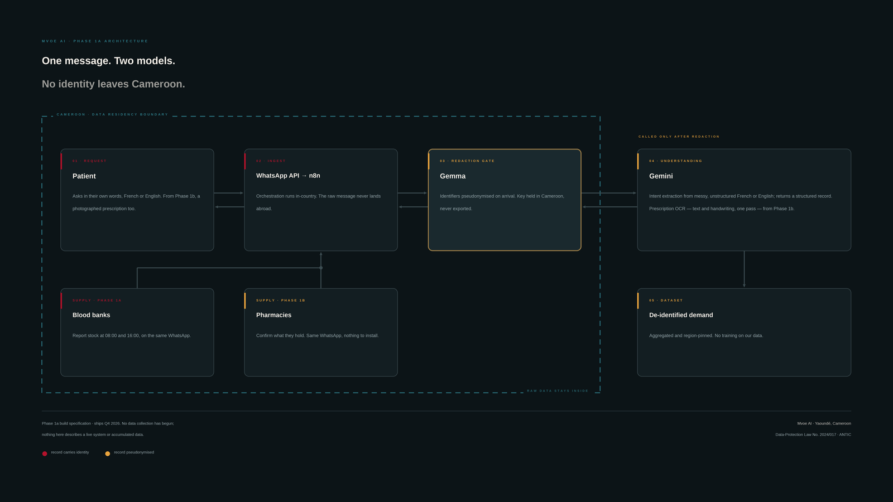

Au Cameroun, moins de la moitié du besoin national en sang est couverte, et les familles cherchent à l'aveugle, structure par structure. Mvoe AI construit le lien entre les banques de sang partenaires et un agent IA sur WhatsApp : une réponse fiable en quelques secondes, sans rien installer. Le MVP de la Phase 1 est prévu pour le 4e trimestre 2026 à Yaoundé. In Cameroon, less than half of national blood demand is covered, and families search blind, facility by facility. Mvoe AI is building the link between partner blood banks and an AI agent on WhatsApp: a reliable answer in seconds, nothing to install. The Phase 1 MVP is scheduled for Q4 2026 in Yaoundé.
Le parcours ci-dessous décrit la spécification de la Phase 1a, livrée avec le MVP au 4e trimestre 2026. Le service n'est pas encore ouvert au public. The flow below is the Phase 1a build specification, delivered with the MVP in Q4 2026. The service is not yet open to the public.
Groupe sanguin et quantité, en français ou en anglais — directement sur WhatsApp, avec vos propres mots.Blood type and quantity, in French or English — directly on WhatsApp, in your own words.
Les banques de sang partenaires déclarent leurs disponibilités deux fois par jour, à 08:00 et 16:00 ; chaque source est notée en fiabilité.Partner blood banks declare availability twice a day, at 08:00 and 16:00; every source carries a reliability score.
Vous recevez la structure la plus proche disposant du produit. Un déplacement, le bon — quand chaque minute compte.You receive the nearest facility holding the product. One trip, the right one — when every minute counts.
Une courte vidéo montre, pas à pas, comment obtenir une réponse fiable sur WhatsApp. A short video shows, step by step, how to get a reliable answer on WhatsApp.
1 min 31 s, sous-titres français inclus. 1 min 31 s, subtitles included.
Nous prouvons la fiabilité du système là où l'enjeu est vital, avant de l'étendre. Deux périmètres distincts, un même socle technologique. We prove the system's reliability where the stakes are vital, before extending it. Two distinct scopes, one technology backbone.
Le produit que nous construisons : la disponibilité des poches de sang, en temps réel, dans les banques de sang partenaires de Yaoundé. Conçu comme une couche complémentaire de la consolidation nationale des stocks, jamais comme un substitut.The product we are building: real-time blood-unit availability across partner blood banks in Yaoundé. Designed as a complementary layer on top of national stock consolidation by the NBTS (National Blood Transfusion Service; CNTS in French), never as a substitute for it.
Une fois le socle validé sur le sang : recherche de médicaments dans les pharmacies agréées partenaires, avec lecture d'ordonnance par photo — pour couper court aux circuits informels et contrefaits.Once the backbone is proven on blood: medicine search across licensed partner pharmacies, with prescription-photo reading — cutting off informal and counterfeit channels.
Conçu pour la loi n° 2024/017 sur la protection des données personnelles. Les identifiants directs sont pseudonymisés dès la réception, la clé de ré-identification restant au Cameroun ; le système de référence sera hébergé au Cameroun avec le MVP de la Phase 1 (règle de conception, mise en œuvre au T4 2026). Revue éthique par notre conseil scientifique. Aucune collecte de données n'a commencé à ce jour.Built for Law No. 2024/017 on personal data protection. Direct identifiers are pseudonymised on receipt, with the re-identification key held in Cameroon; the system of record will be hosted in Cameroon with the Phase 1 MVP (design rule, implemented Q4 2026). Ethics review by our scientific advisory board. No data collection has begun to date.
Le message brut arrive au Cameroun et n'en sort pas. Un premier modèle, exécuté localement, retire les identifiants avant que quoi que ce soit ne soit envoyé plus loin ; seul le texte expurgé atteint le modèle de compréhension. The raw message lands in Cameroon and does not leave. A first model, run locally, strips identifiers before anything travels further; only redacted text reaches the understanding model.

Phase 1a — spécification de conception, livrée au T4 2026. Aucune collecte de données n'a commencé ; rien ici ne décrit un système en production ni des données accumulées. Phase 1a — build specification, delivered Q4 2026. No data collection has begun; nothing here describes a live system or accumulated data.
Banque de sang, hôpital, pharmacie, institution ou investisseur : parlons-en. Lancement de la Phase 1 à Yaoundé au 4e trimestre 2026.Blood bank, hospital, pharmacy, institution or investor: let's talk. Phase 1 launches in Yaoundé in Q4 2026.
Nous écrireWrite to us« Une goutte de l'un peut être toute la vie de l'autre. »“A drop from one can be the whole life of another.”